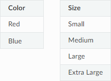

Joins
The JOIN clause combines results from two or more table expressions (tables, external tables, views) based on a related column or other condition. Performing a join outputs a new result set. For example, two tables containing one or more columns in common can be joined to match or correlate with rows from another table.
Syntax
The following shows the correct syntax for creating a join:
table_ref ::=
| left_side join_type right_side
[ ON value_expr ]
| table_alias
join_type ::=
[ INNER ] [ join_hint ] JOIN
| LEFT [ OUTER ] [ join_hint ] JOIN
| RIGHT [ OUTER ] [ join_hint ] JOIN
| CROSS [ join_hint ] JOIN
join_hint ::=
MERGE | LOOP
Join Types
The Join Types section describes the following join types:
Inner Joins
The following shows the correct syntax for creating an inner join:
left_side [ INNER ] JOIN left_side ON value_expr
left_side [ INNER ] JOIN left_side USING ( join_column [, ... ] )
Inner joins are the default join type and return rows from the left_side and right_side based on a matching condition.
An inner join can also be specified by listing several tables in the FROM clause, as shown below:
FROM table1, table2
[ { INNER JOIN
| LEFT [OUTER] JOIN
| RIGHT [OUTER] JOIN
ON table1.column1 = table2.column1 ]
Omitting the ON or WHERE clause creates a CROSS JOIN, where every left_side row is matched with every right_side row.
For more information about cross joins, see cross joins below.
For an inner join example, see Inner Join Example.
Left Outer Joins
The following shows the correct syntax for creating an left outer join:
left_side LEFT [ OUTER ] JOIN right_side ON value_expr
left_side LEFT [ OUTER ] JOIN right_side USING ( join_column [, ... ] )
Left outer joins are similar to inner joins, except that for every left_side row without a matching condition, a NULL value is returned for the corresponding right_side column.
For a left inner join example, see Left Join Example.
Right Outer Joins
The following shows the correct syntax for creating an right outer join:
left_side RIGHT [ OUTER ] JOIN right_side ON value_expr
left_side RIGHT [ OUTER ] JOIN right_side USING ( join_column [, ... ] )
Right outer joins are similar to inner joins, except that for every right_side row without a matching condition, a NULL value is returned for the corresponding left_side column.
For a right outer join example, see Right Join Example.
Cross Joins
The following shows the correct syntax for creating an cross join:
left_side CROSS JOIN right_side
Cross joins return all rows in all tables listed in a query, pairing each row in the first table with each row in the second table. A cross join is also known as a Cartesian product, and occurs when no relationship is defined between the two tables.
The CROSS JOIN clause cannot have an ON clause, but the WHERE clause can be used to limit the result set.
The following is an example of two tables that will be used as the basis for a cross join:
The following is the output result of the cross join:
Color |
Size |
|---|---|
Red |
Small |
Blue |
Small |
Red |
Medium |
Blue |
Medium |
Red |
Large |
Blue |
Large |
Red |
Extra Large |
Blue |
Extra Large |
For a cross join example, see Cross Join Example.
The ON Condition
The ON condition is a value expression that generates a Boolean output to identify whether rows match.
For example, the following is displayed when two name columns match:
ON left_side.name = right_side.name
The ON clause is optional for LEFT and RIGHT joins. However, excluding it results in a computationally intensive cross join.
Tip
SQream DB does not support the USING syntax. However, queries can be easily rewritten. left_side JOIN right_side using (name) is equivalent to ON left_side.name = right_side.name
Join Type Examples
The examples in this section are based on a pair of tables with the following structure and content:
CREATE TABLE left_side (x INT);
INSERT INTO left_side VALUES (1), (2), (4), (5);
CREATE TABLE right_side (x INT);
INSERT INTO right_side VALUES (2), (3), (4), (5), (6);
Inner Join Example
The following is an example of an inner join.
t=> SELECT * FROM left_side AS l JOIN right_side AS r
. ON l.x = r.x;
x | x0
--+---
2 | 2
4 | 4
5 | 5
Notice in the example above that values with no matching conditions do not appear in the result output.
Left Join Example
The following is an example of a left join:
t=> SELECT * FROM left_side AS l LEFT JOIN right_side AS r
. ON l.x = r.x;
x | x0
--+---
2 | 2
4 | 4
5 | 5
1 | \N
Note
Note the unmatched``NULL`` (\N) values for 1. SQream outputs NULL values last.
Right Join Example
The following is an example of a right join:
t=> SELECT * FROM left_side AS l RIGHT JOIN right_side AS r
. ON l.x = r.x;
x | x0
---+---
2 | 2
4 | 4
5 | 5
\N | 3
\N | 6
Note
Note the unmatched NULL values for 3 and 6. SQream outputs NULL values last.
Cross Join Example
The following is an example of a cross join:
t=> SELECT * FROM left_side AS l CROSS JOIN right_side AS r;
x | x0
--+---
1 | 2
1 | 3
1 | 4
1 | 5
1 | 6
2 | 2
2 | 3
2 | 4
2 | 5
2 | 6
4 | 2
4 | 3
4 | 4
4 | 5
4 | 6
5 | 2
5 | 3
5 | 4
5 | 5
5 | 6
Specifying multiple comma-separated tables is equivalent to a cross join, which can be filtered with a WHERE clause as shown in the following example:
t=> SELECT * FROM left_side l, right_side r;
x | x0
--+---
1 | 2
1 | 3
1 | 4
1 | 5
1 | 6
2 | 2
2 | 3
2 | 4
2 | 5
2 | 6
4 | 2
4 | 3
4 | 4
4 | 5
4 | 6
5 | 2
5 | 3
5 | 4
5 | 5
5 | 6
t=> SELECT * FROM left_side l, right_side r WHERE (r.x=l.x);
x | x0
--+---
2 | 2
4 | 4
5 | 5
Join Hints
Join hints can be used to override the query compiler and choose a particular join algorithm. The available algorithms are LOOP (corresponding to non-indexed nested loop join algorithm), and MERGE (corresponding to sort merge join algorithm). If no algorithm is specified, a loop join is performed by default.
The following is an example of using a join hint:
t=> SELECT * FROM left_side AS l INNER MERGE JOIN right_side AS r ON l.x = r.x;
x | x0
--+---
2 | 2
4 | 4
5 | 5
t=> SELECT * FROM left_side AS l INNER LOOP JOIN right_side AS r ON l.x = r.x;
x | x0
--+---
2 | 2
4 | 4
5 | 5